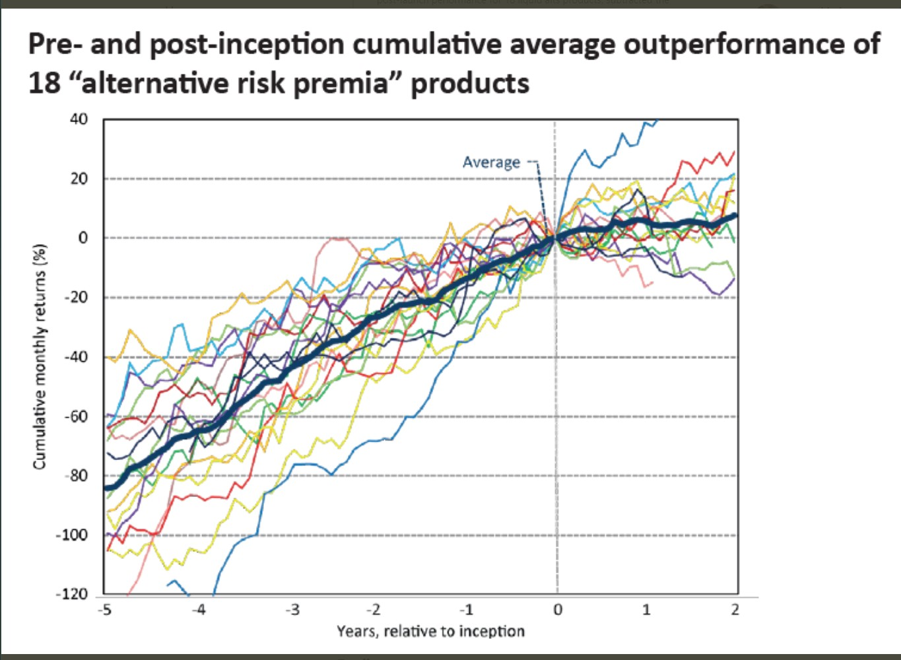
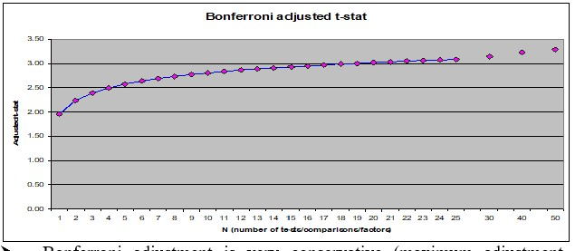
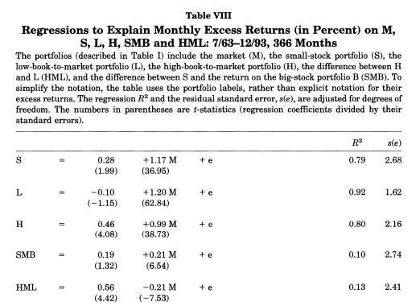

11. 📘 Performance Evaluation#
11.1. 🎯 Learning Objectives#
By the end of this notebook, you will be able to:
Frame performance through risk-adjusted metrics — Distinguish raw returns from Sharpe ratio and alpha
Run an alpha test with the CAPM — Subtract RF, regress on market, interpret \(\alpha\), \(\beta\), t-stats
Quantify estimation error — Compute standard errors, confidence bands, and bootstrap Sharpe ratios
Diagnose over-fitting — Understand how data-mining inflates t-stats and practice safeguards
Design robust backtests — Build hold-out periods, cross-validation splits, and rolling windows
Combine strategies intelligently — Estimate optimal weights in one subsample, validate in another
Detect publication bias — Compare pre- and post-publication performance of famous anomalies
Translate diagnostics into sizing — Use a calibrated discovery process to accept, size, or discard strategies
11.2. 📋 Table of Contents#
11.3. 🛠️ Setup#
#@title 🛠️ Setup: Run this cell first (click to expand)
import numpy as np
import pandas as pd
import matplotlib.pyplot as plt
%matplotlib inline
import statsmodels.api as sm
import pandas_datareader.data as web
from scipy.stats import norm
plt.style.use('seaborn-v0_8-whitegrid')
plt.rcParams['figure.figsize'] = [10, 6]
plt.rcParams['font.size'] = 12
import warnings
warnings.filterwarnings('ignore')
def get_factors(factors='CAPM', freq='daily'):
if freq == 'monthly':
freq_label = ''
else:
freq_label = '_' + freq
if factors == 'CAPM':
fama_french = web.DataReader("F-F_Research_Data_Factors" + freq_label, "famafrench", start="1921-01-01")
df_factor = fama_french[0][['RF', 'Mkt-RF']]
elif factors == 'FF3':
fama_french = web.DataReader("F-F_Research_Data_Factors" + freq_label, "famafrench", start="1921-01-01")
df_factor = fama_french[0][['RF', 'Mkt-RF', 'SMB', 'HML']]
elif factors == 'FF5':
fama_french = web.DataReader("F-F_Research_Data_Factors" + freq_label, "famafrench", start="1921-01-01")
df_factor = fama_french[0][['RF', 'Mkt-RF', 'SMB', 'HML']]
fama_french2 = web.DataReader("F-F_Research_Data_5_Factors_2x3" + freq_label, "famafrench", start="1921-01-01")
df_factor = df_factor.merge(fama_french2[0][['RMW', 'CMA']], on='Date', how='outer')
else:
fama_french = web.DataReader("F-F_Research_Data_Factors" + freq_label, "famafrench", start="1921-01-01")
df_factor = fama_french[0][['RF', 'Mkt-RF', 'SMB', 'HML']]
fama_french2 = web.DataReader("F-F_Research_Data_5_Factors_2x3" + freq_label, "famafrench", start="1921-01-01")
df_factor = df_factor.merge(fama_french2[0][['RMW', 'CMA']], on='Date', how='outer')
fama_french3 = web.DataReader("F-F_Momentum_Factor" + freq_label, "famafrench", start="1921-01-01")
df_factor = df_factor.merge(fama_french3[0], on='Date')
df_factor.columns = ['RF', 'Mkt-RF', 'SMB', 'HML', 'RMW', 'CMA', 'MOM']
if freq == 'monthly':
df_factor.index = pd.to_datetime(df_factor.index.to_timestamp())
else:
df_factor.index = pd.to_datetime(df_factor.index)
return df_factor / 100
# Load Fama-French 6-factor data (monthly)
df_ff6 = get_factors('ff6', freq='monthly').dropna()
print(f"Sample: {df_ff6.index[0].strftime('%Y-%m')} to {df_ff6.index[-1].strftime('%Y-%m')} ({len(df_ff6)} months)")
df_ff6.head()
11.4. Alpha Testing: The Pod Manager Problem #
Suppose you are a principal at Citadel deciding whether to add a new pod to the hedge fund. You are monitoring the performance of several outside groups. What do you need to see before inviting them in?
Alternatively, think about a new trading idea whose theoretical performance you are tracking. What threshold must it clear before you deploy capital?
The decision depends on many things. Let’s say you want to be \(p = 70\%\) certain that the appraisal ratio exceeds some target \(\underline{ar}\):
where \(T\) is the sample length in years. This creates a time-varying threshold: the bar is high early on (when uncertainty is large) and falls as evidence accumulates.
11.4.1. The Alpha Test#
Given strategy excess returns \([r_1^e, \ldots, r_T^e]\):
Subtract the risk-free rate from raw returns
Choose a factor model (we start with the CAPM)
Run the regression: \(r^{e}_t = \alpha + \beta \, r^{mkt}_t + \epsilon_t\)
Test whether \(\alpha\) exceeds your hurdle
| \(|t_\alpha|\) | Confidence | |:—:|:—| | \(\geq 1.64\) | 90% | | \(\geq 1.96\) | 95% | | \(\geq 2.58\) | 99% |
The test asset is on the left of the regression; the factor (candidate tangency portfolio) is on the right. If the factor is truly MVE, all alphas should be zero.
💡 Key Insight:
A non-zero alpha does not mean you prefer the test asset over the factor. It means you can improve by combining both — the alpha test asks whether the factor is the tangency portfolio with respect to the expanded opportunity set.
def plot_alpha_threshold(ar, T_max, p):
"""Plot the AR threshold needed to be p-confident that true AR > target."""
T = np.arange(1, T_max + 1)
z = norm.ppf(p)
threshold = z / np.sqrt(T / 12) + ar
plt.figure(figsize=(10, 5))
plt.plot(T / 12, threshold, linewidth=2)
plt.xlabel('Years of data')
plt.ylabel('AR threshold')
plt.title(f'Minimum observed AR to be {p:.0%} confident (target AR = {ar})')
plt.grid(True, alpha=0.3)
plt.tight_layout()
plt.show()
# When to promote: need p=70% confidence that AR > 1
plot_alpha_threshold(ar=1, T_max=5*12, p=0.7)
The threshold is very stringent early on, but converges to the target as uncertainty shrinks
With a true AR of ~1.5 it takes about a year to clear the bar
The big takeaway: the longer the sample, the lower the realized AR needs to be for you to be convinced
11.4.2. When to fire a pod / abandon a strategy?#
Flip the question: you give up when you are \(p = 75\%\) confident the AR is below your target.
# When to fire: p=75% confidence that AR < target
plot_alpha_threshold(ar=1, T_max=5*12, p=0.25)
🤔 Think and Code:
Call
plot_alpha_threshold(ar=1, T_max=5*12, p=0.75). How does the threshold differ from the “fire” plot?What happens if you double the target AR? How much longer do you need to wait?
# Your code here
📌 Remember:
Under i.i.d. returns: \(\text{Appraisal Ratio} = \dfrac{t_\alpha}{\sqrt{T}}\)
This links the appraisal ratio directly to the statistical significance of alpha for a given sample length.
11.5. MVE Example: Overfitting in Action #
We’ll build a mean-variance efficient (MVE) portfolio from Fama-French factors and see how in-sample performance can be spectacularly misleading.
def MVE(df, VolTarget=0.1/12**0.5):
"""Estimate MVE portfolio and report performance."""
VarR = df.cov()
ER = df.mean()
W = ER @ np.linalg.inv(VarR)
VarW = W @ VarR @ W
w = VolTarget / VarW**0.5
Ww = w * W
SR = (df @ Ww).mean() / (df @ Ww).std() * 12**0.5
vol = (df @ Ww).std() * 12**0.5
x = sm.add_constant(df['Mkt-RF'])
y = df @ Ww
regresult = sm.OLS(y, x).fit()
alpha = regresult.params[0] * 12
t_alpha = regresult.tvalues[0]
AR = alpha / (regresult.resid.std() * 12**0.5)
return {'SR': SR, 'Vol': vol, 'Alpha': alpha, 'tAlpha': t_alpha, 'AR': AR}
# Estimate AND evaluate on the full sample — this is NOT a valid backtest!
MVE(df_ff6.drop(columns='RF'))
⚠️ Caution:
This strategy uses full-sample moments to construct weights, then evaluates on the same sample. The SR is guaranteed to look amazing. This is the most severe form of look-ahead bias — it is not a valid trading strategy.
A valid trading strategy can only use information known at the time of the trade. Let’s split the sample properly: estimate on data up to 2013, test on 2014+.
def MVE(df_est, df_test, VolTarget=0.1/12**0.5):
"""Estimate MVE on df_est, evaluate on df_test."""
VarR = df_est.cov()
ER = df_est.mean()
W = ER @ np.linalg.inv(VarR)
VarW = W @ VarR @ W
w = VolTarget / VarW**0.5
Ww = w * W
SR = (df_test @ Ww).mean() / (df_test @ Ww).std() * 12**0.5
vol = (df_test @ Ww).std() * 12**0.5
x = sm.add_constant(df_test['Mkt-RF'])
y = df_test @ Ww
regresult = sm.OLS(y, x).fit()
alpha = regresult.params[0] * 12
t_alpha = regresult.tvalues[0]
AR = alpha / (regresult.resid.std() * 12**0.5)
return {'SR': SR, 'Vol': vol, 'Alpha': alpha, 'tAlpha': t_alpha, 'AR': AR}
# In-sample (same data for estimation and evaluation)
print("In-sample: ", MVE(df_ff6[:'2013'].drop(columns='RF'), df_ff6[:'2013'].drop(columns='RF')))
# Out-of-sample (estimate on pre-2013, test on 2014+)
print("Out-of-sample:", MVE(df_ff6[:'2013'].drop(columns='RF'), df_ff6['2014':].drop(columns='RF')))
🤔 Think and Code:
What happened to the SR out of sample? Is that expected?
Can you even reject a zero alpha with ~10 years of test data?
If the true AR is 1.3, how many years would you need to reject zero alpha?
# Under the null that the estimation-sample AR is true,
# what is the probability of observing our test-sample alpha?
alpha_est = 0.12
alpha_test = 0.038
ar_est = 1.3
ar_test = 0.3
sigmae_test = alpha_test / ar_test # recover residual vol from the test AR
T = np.arange(1, 11)
probabilities = norm.cdf((alpha_test - alpha_est) / sigmae_test * np.sqrt(T))
plt.figure(figsize=(10, 5))
plt.plot(T, probabilities, 'o-', linewidth=2)
plt.xlabel('Years of test data')
plt.ylabel('P(observe alpha this low | true alpha = est)')
plt.title('Is 10 years enough to tell?')
plt.grid(True, alpha=0.3)
plt.tight_layout()
plt.show()
With only 1 year and a mediocre test alpha, there’s still a 20%+ chance the true alpha is as high as in-sample
Design your test sample with the test you want to run in mind — a sample that’s too short cannot reject anything
The longer you leave for testing, the more powerful your evaluation becomes
11.6. The Basic Problem of Overfitting#
Every sample estimate is a random variable. Optimization amplifies noise:
It selects signals that are pure noise with no real predictive power
It overweights real signals relative to their true importance
It discards real signals that didn’t show up strongly enough

11.7. Be Clear About Your Goal#
The central goal is to calibrate your discovery process:
Invest in strategies that truly have alpha; discard the ones that don’t
Be tough enough to avoid noise, but not so tough you throw away real ideas
The better you know the quality of your discovery, the easier it is to size positions
💡 Key Insight:
The goal is not to find the strategy with the highest in-sample performance. It is to build a process that reliably identifies genuine alpha while discarding noise. Overfitting is the default — discipline is the edge.
11.8. Building a Diagnostics Toolkit #
You should look at many things when evaluating a strategy:
Sharpe Ratio + t-stat of the SR
Alpha, t-stat of alpha, appraisal ratio
Cumulative return and drawdown plots
Tail behavior (% of observations beyond ±3σ)
Fraction to half: how many observations must you remove to halve the SR?
Compare everything against the market benchmark
We’ll separate strategy estimation (computing weights) from diagnostics (evaluating performance). This makes the diagnostics function portable across any strategy.
def MVE(df, VolTarget):
"""Return MVE weights given factor data and a volatility target."""
VarR = df.cov()
ER = df.mean()
W = ER @ np.linalg.inv(VarR)
VarW = W @ VarR @ W
w = VolTarget / VarW**0.5
Ww = w * W
return Ww
Ww = MVE(df_ff6['1963':'1993'].drop(columns='RF'), VolTarget=0.1/12**0.5)
print("MVE weights:", dict(zip(df_ff6.drop(columns='RF').columns, Ww.round(3))))
11.8.2. Fraction to Half#
How many observations must you remove to halve the Sharpe ratio? The algorithm is greedy: at each step, remove the single observation whose deletion decreases the SR the most. Repeat until SR drops below half its original value.
💡 Key Insight:
If removing just 2–3% of observations halves your Sharpe ratio, those few dates are doing all the heavy lifting. That is fragile performance.
def fractiontohalf(R):
"""Fraction of observations to remove (greedily) to halve the Sharpe ratio."""
SR_original = R.mean() / R.std()
target = SR_original / 2
T = len(R)
R_rem = R.copy()
removed = 0
while R_rem.mean() / R_rem.std() > target and len(R_rem) > 2:
# Try dropping each observation; find the one that lowers SR the most
best_idx = None
best_sr = np.inf
for idx in R_rem.index:
R_temp = R_rem.drop(idx)
sr_temp = R_temp.mean() / R_temp.std()
if sr_temp < best_sr:
best_sr = sr_temp
best_idx = idx
R_rem = R_rem.drop(best_idx)
removed += 1
return removed / T
# Test on the market factor
frac = fractiontohalf(df_est['Mkt-RF'])
print(f"Fraction to half (Mkt-RF, 1963-2012): {frac:.1%}")
📌 Remember: Drawdown Plots
A drawdown measures how far a strategy has fallen from its peak. This tells you how long the painful losing periods last — critical for fund lockup decisions, manager evaluation, and your own pain tolerance.
# Standalone drawdown example: the market
fig, ax = plt.subplots(1, 2, figsize=(14, 5))
cumperf = (df_ff6['Mkt-RF'] + df_ff6.RF + 1).cumprod()
running_max = cumperf.cummax()
drawdown = (cumperf - running_max) / running_max
cumperf.plot(ax=ax[0], logy=True, linewidth=1.5, label='Cumulative')
running_max.plot(ax=ax[0], logy=True, linewidth=1, alpha=0.6, label='Running max')
ax[0].set_title('Market: Cumulative Performance')
ax[0].legend()
ax[0].set_ylabel('Growth of $1 (log scale)')
drawdown.plot(ax=ax[1], linewidth=1, color='firebrick')
ax[1].set_title('Market: Drawdown')
ax[1].set_ylabel('Drawdown (%)')
ax[1].fill_between(drawdown.index, drawdown, alpha=0.2, color='firebrick')
plt.tight_layout()
plt.show()
11.8.3. The Complete Diagnostics Function#
This function computes all the metrics above and produces a two-panel plot (cumulative returns + drawdown). Pass either portfolio weights W or a pre-computed return series R.
def Diagnostics(W, df, R=None):
"""Run a full diagnostic suite on a strategy."""
results = {}
Rf = df['RF']
Factor = df['Mkt-RF']
df = df.drop(columns=['RF'])
if R is None:
R = df @ W
T = R.shape[0]
# --- Performance metrics ---
results['SR'] = R.mean() / R.std() * 12**0.5
results['SR_factor'] = Factor.mean() / Factor.std() * 12**0.5
results['Vol'] = R.std() * 12**0.5
results['Vol_factor'] = Factor.std() * 12**0.5
results['mean'] = R.mean() * 12
results['t_mean'] = R.mean() / R.std() * T**0.5
results['mean_factor'] = Factor.mean() * 12
results['t_mean_factor'] = Factor.mean() / Factor.std() * T**0.5
# --- Alpha regression ---
x = sm.add_constant(Factor)
regresult = sm.OLS(R, x).fit()
results['alpha'] = regresult.params[0] * 12
results['t_alpha'] = regresult.tvalues[0]
results['AR'] = results['alpha'] / (regresult.resid.std() * 12**0.5)
# --- Tail behavior ---
results['tails'] = (R < -3*R.std()).mean() + (R > 3*R.std()).mean()
results['tails_factor'] = (Factor < -3*Factor.std()).mean() + (Factor > 3*Factor.std()).mean()
results['min_ret'] = R.min()
results['min_factor'] = Factor.min()
# --- Sharpe ratio t-test ---
results['t_SR'] = results['SR'] / (SR_vol(R) * 12**0.5)
results['t_SR_factor'] = results['SR_factor'] / (SR_vol(Factor) * 12**0.5)
# --- Fraction to half ---
results['fraction_tohalf'] = fractiontohalf(R)
results['fraction_tohalf_factor'] = fractiontohalf(Factor)
# --- Plots: cumulative returns + drawdown ---
fig, ax = plt.subplots(1, 2, figsize=(14, 5))
cum_port = (R + Rf + 1).cumprod()
cum_mkt = (Factor + Rf + 1).cumprod()
cum_port.plot(ax=ax[0], logy=True, linewidth=1.5, label='Portfolio')
cum_mkt.plot(ax=ax[0], logy=True, linewidth=1, alpha=0.7, label='Market')
ax[0].set_title('Cumulative Performance')
ax[0].legend()
ax[0].set_ylabel('Growth of $1 (log scale)')
running_max = cum_port.cummax()
dd = (cum_port - running_max) / running_max
dd.plot(ax=ax[1], linewidth=1, color='firebrick')
ax[1].fill_between(dd.index, dd, alpha=0.2, color='firebrick')
ax[1].set_title('Portfolio Drawdown')
ax[1].set_ylabel('Drawdown')
plt.tight_layout()
plt.show()
formatted_dict = {key: [value] for key, value in results.items()}
return pd.DataFrame(formatted_dict).T
split_year = 2012
df_est = df_ff6['1963':str(split_year)]
Volmkt = df_est['Mkt-RF'].std()
Ww = MVE(df_est.drop(columns='RF'), VolTarget=Volmkt)
df_test = df_ff6[str(split_year + 1):]
Results = pd.DataFrame()
Results['Estimation'] = Diagnostics(Ww, df_est)
Results['Test'] = Diagnostics(Ww, df_test)
Results
🤔 Think and Code:
Compare the estimation and test columns side by side.
Which metrics degrade the most out of sample?
What does
fraction_tohalftell you about robustness in each period?How do the drawdown plots differ?
11.9. Adjusting for Multiple Testing #
When you try many signals, conventional t-test thresholds are too lenient. The Bonferroni correction is a simple (conservative) fix: divide your significance level by the number of tests.

The threshold jumps from 1.96 to ~3.0 as you go from 1 to 20 signals. Most of the correction happens in the first few signals.
Example: You try 100 ideas over 24 months. How many look significant even if none are real?
# 100 pure-noise strategies tested over 24 months
R = pd.DataFrame(norm.rvs(loc=0, scale=0.16/12**0.5, size=(24, 100)))
t = R.mean() / (R.std() / 24**0.5)
print(f"Strategies with t > 1.64: {(t > 1.64).sum()} out of 100")
🤔 Think and Code:
Now suppose one of the 100 signals is real (annualized SR = 1).
What is your hit rate — how often do you find the correct idea?
What happens as you change the t-cutoff, the true SR, or the sample length?
SR = 1
t_cutoff = 2
Nmonths = 48
Ideas = 100
simulations = 1000
number_of_correct = 0
number_of_wrong = 0
for i in range(simulations):
R = pd.DataFrame(norm.rvs(loc=0, scale=1, size=(Nmonths, Ideas)))
R.iloc[:, 0] = R.iloc[:, 0] + SR / 12**0.5 # first strategy is the real one
t = R.mean() / (R.std() / Nmonths**0.5)
number_of_correct += (t.iloc[0] > t_cutoff).sum()
number_of_wrong += (t.iloc[1:] > t_cutoff).sum()
hit_rate = number_of_correct / (number_of_correct + number_of_wrong)
detection_rate = number_of_correct / simulations
print(f"Hit rate (correct / total flagged): {hit_rate:.1%}")
print(f"Detection rate (found the real one): {detection_rate:.1%}")
The simulation reveals the core trade-off: a lenient cutoff finds the real signal but also many false positives. A strict cutoff avoids false discoveries but may miss the true signal entirely. There is no free lunch — you must choose your error tolerance.
11.10. Sample Splitting Strategies #
A few popular approaches:
Rolling window — re-estimate at each date using the most recent \(W\) months
Odd/even split — use odd months for estimation, even for testing (and vice versa)
Two-way split — estimation sample + test sample
Three-way split — estimation + test (for model selection) + hold-out (for final evaluation)
11.10.1. Application 1: Optimal Combination of Momentum and Value#
We split the sample into two interleaved halves:
Odd months in even years + even months in odd years
The mirror image
This lets us cross-validate: estimate weights on one half, test on the other, then swap. We’re not testing particular weights but an approach to portfolio construction.
We construct both samples using a function that flags odd-month/even-year combinations:
def sample(df):
"""Split data into two interleaved halves for cross-validation."""
def is_odd(num):
return num % 2 != 0
evenyear_oddmonth = (~is_odd(df.index.year)) & (is_odd(df.index.month))
oddyear_evenmonth = (is_odd(df.index.year)) & (~is_odd(df.index.month))
sample1 = evenyear_oddmonth | oddyear_evenmonth
sample2 = ~sample1
return sample1, sample2
df_ff6 = get_factors('ff6', freq='monthly')
sample1, sample2 = sample(df_ff6)
Now run diagnostics in both directions:
# Direction 1: estimate on sample1, test on sample2
df_est = df_ff6.loc[sample1, ['HML', 'MOM', 'Mkt-RF', 'RF']]
df_test = df_ff6.loc[sample2, ['HML', 'MOM', 'Mkt-RF', 'RF']]
Ww = MVE(df_est[['HML', 'MOM']], VolTarget=df_est['Mkt-RF'].std())
Ww = np.append(Ww, 0) # set market weight to zero
Results = pd.DataFrame()
Results['Test_s2_est1'] = Diagnostics(Ww, df_test)
# Direction 2: estimate on sample2, test on sample1
df_est = df_ff6.loc[sample2, ['HML', 'MOM', 'Mkt-RF', 'RF']]
df_test = df_ff6.loc[sample1, ['HML', 'MOM', 'Mkt-RF', 'RF']]
Ww = MVE(df_est[['HML', 'MOM']], VolTarget=df_est['Mkt-RF'].std())
Ww = np.append(Ww, 0)
Results['Test_s1_est2'] = Diagnostics(Ww, df_test)
Results
🤔 Think and Code:
What do the cross-validated results tell you?
Both HML and MOM were published by famous professors around 1990. Does that matter?
Does knowing about publication bias change your interpretation?
📌 Remember: Robustifying Your Backtests
Have a hold-out sample never used for estimation or model selection
Be careful that information from the test sample doesn’t leak into estimation
Keep track of your discarded ideas — they matter for multiple-testing corrections
When tuning is needed, you must have three splits: estimation, test, and hold-out
11.10.2. Application 2: Fine-Tuning the Look-Back Window#
We’ll compare rolling-window strategies with different look-back lengths to find which works best. The trade-off:
Too short → picks up noise
Too long → moments may no longer reflect the future
We split the data into two parts:
Estimation + Test: everything before 2003 (for window tuning)
Hold-out: 2003 onwards (for final evaluation — don’t peek until you’re done tuning!)
# Split into estimation/test vs. hold-out
holdout_sample = df_ff6.index.year > 2002
df_hold = df_ff6.loc[holdout_sample, ['HML', 'MOM', 'Mkt-RF', 'RF']]
df_EstTest = df_ff6.loc[~holdout_sample, ['HML', 'MOM', 'Mkt-RF', 'RF']]
print(f"Est+Test: {df_EstTest.index[0].strftime('%Y-%m')} to {df_EstTest.index[-1].strftime('%Y-%m')} ({len(df_EstTest)} months)")
print(f"Hold-out: {df_hold.index[0].strftime('%Y-%m')} to {df_hold.index[-1].strftime('%Y-%m')} ({len(df_hold)} months)")
Let’s start by building a single rolling-window strategy with a 60-month look-back:
window = 60
df = df_EstTest.copy()
df['Strategy'] = np.nan
for d in df.index[window:]:
df_temp = df.loc[d - pd.DateOffset(months=window):d - pd.DateOffset(months=1)].copy()
X = MVE(df_temp[['HML', 'MOM']], VolTarget=df_temp['Mkt-RF'].std())
df.at[d, 'Strategy'] = df.loc[d, ['HML', 'MOM']] @ X
df.dropna().tail()
Note: early observations are NaN because we need the full look-back window before producing a signal. Let’s run diagnostics:
# Pass the strategy return directly (weights are time-varying)
df = df.dropna()
Diagnostics(0, df, R=df['Strategy'])
Now let’s generalize this into a function and compare multiple window lengths:
def RollingEval(df, window):
"""Rolling-window MVE strategy with given look-back."""
df = df.copy()
df['Strategy'] = np.nan
for d in df.index[window:]:
df_temp = df.loc[d - pd.DateOffset(months=window):d - pd.DateOffset(months=1)].copy()
X = MVE(df_temp[['HML', 'MOM']], VolTarget=df_temp['Mkt-RF'].std())
df.at[d, 'Strategy'] = df.loc[d, ['HML', 'MOM']] @ X
return df
# Compare multiple window lengths
windows = [6, 12, 24, 36, 48, 60, 72, 120]
Results_windows = pd.DataFrame()
for w in windows:
Returns = RollingEval(df_EstTest.copy(), w).dropna()
Results_windows[w] = Diagnostics(0, Returns, R=Returns['Strategy'])
Results_windows
⚠️ Caution:
Once you peek at the hold-out sample, you must stop tuning. Any further adjustment contaminates your out-of-sample evidence. Make your choice of window length now, before looking.
Is the pattern across windows consistent with better estimation from longer histories?
What else would you want to examine before committing?
11.10.3. Ready to look at the hold-out sample?#
# Final evaluation on the hold-out sample
# Choose a window length based on the analysis above
chosen_window = 36
Returns_holdout = RollingEval(df_hold.copy(), chosen_window).dropna()
Diagnostics(0, Returns_holdout, R=Returns_holdout['Strategy'])
🤔 Think and Code:
What do you conclude? Did the tuned strategy survive the hold-out test? How does the hold-out SR compare to what you saw in the estimation/test period?
11.11. Publication Bias #
We often investigate a strategy because it performed well historically. This selection mechanism biases our analysis toward strategies that look amazing.
One clean setting: academic papers. We know exactly when a paper was published and what sample it used. A nice study of this is McLean & Pontiff (2016): Does Academic Research Destroy Stock Return Predictability?
Application: HML (Fama-French 1993)
The original paper used data from 1963–1993:

The HML alpha was enormous: 0.56% per month with a negative market beta. Let’s check what happened before and after the publication sample.
# Define pre-, during, and post-publication samples
sample_pre = df_ff6.index.year < 1964
sample_pub = (df_ff6.index.year >= 1964) & (df_ff6.index.year <= 1993)
sample_post = df_ff6.index.year > 1993
Results_pub = pd.DataFrame()
df = df_ff6[sample_pre]
Results_pub['Pre-publication'] = Diagnostics(0, df, R=df['HML'])
df = df_ff6[sample_pub]
Results_pub['Publication'] = Diagnostics(0, df, R=df['HML'])
df = df_ff6[sample_post]
Results_pub['Post-publication'] = Diagnostics(0, df, R=df['HML'])
Results_pub
💡 Key Insight:
The HML premium largely disappeared post-publication. The SR dropped from ~0.6 in the publication sample to near zero afterward. Whether this reflects data-snooping or capital inflows eroding the anomaly is an open question — but it demonstrates why out-of-sample testing is essential.
Key observations:
Pre-publication: Respectable SR, but high market correlation → statistically insignificant alpha
Publication period: Spectacular returns — this is what made the paper famous
Post-publication: SR collapses; the optimal weight on HML drops dramatically
Does this mean it was data snooping? Not necessarily — publication itself may have driven capital into the strategy, eroding the premium.
11.11.1. Literature#
False (and Missed) Discoveries in Financial Economics — Harvey, Liu & Zhu
Predicting Anomaly Performance with Politics, the Weather, Global Warming, Sunspots, and the Stars — Novy-Marx
A Comprehensive Look at the Empirical Performance of Equity Premium Prediction — Welch & Goyal
The more complicated a strategy, the more in-sample results diverge from out-of-sample reality. Looking for large t-stats only partially guards against this — you’ll find them even when no true alpha exists.
Useful industry threads:
11.12. 📝 Exercises #
11.12.1. Exercise 1: Sharpe Ratio Sensitivity#
🔧 Exercise:
Using
df_ff6['Mkt-RF']:
Compute the annualized SR for the full sample and for the post-2000 subsample
Use
SR_volto compute 95% confidence intervals for eachCan you reject that the two SRs are equal?
# Your code here
11.12.2. Exercise 2: Fraction to Half Across Factors#
🤔 Think and Code:
Compute
fractiontohalffor HML, SMB, and MOM individually (use the full sample)Which factor is most fragile? Which is most robust?
What economic story might explain the differences?
# Your code here
11.12.3. Exercise 3: Design Your Own Backtest#
🤔 Think and Code:
Pick any two factors from the FF6 set. Design a complete backtest:
Define estimation, test, and hold-out periods
Estimate MVE weights on the estimation sample
Run
Diagnosticson test and hold-out samplesWrite a 3-sentence conclusion: would you invest?
# Your code here
11.13. 🧠 Key Takeaways #
Sharpe and alpha complement each other. The Sharpe ratio ranks standalone risk-return efficiency; factor \(\alpha\) and the appraisal ratio reveal skill over systematic risks.
Subtract the risk-free rate and test against factors — always. Raw excess returns can look great until market beta is accounted for.
Statistical significance is fragile. A high in-sample t-stat may vanish with multiple testing corrections, shifting windows, or fresh data — especially after optimization.
Hold-out and cross-validation are your best friends. True out-of-sample Sharpe ratios provide the clearest window on future performance.
Over-fitting is the default, not the exception. Without disciplined controls you will gravitate toward noise that “worked” by chance.
Strategy blends demand covariance awareness. Combining two high-Sharpe ideas poorly can lower overall risk-adjusted returns.
Publication bias is real and costly. Many celebrated anomalies fade once they become popular; splitting before/after notoriety helps set realistic expectations.
A rigorous evaluation process is an edge in itself. Clear goals, transparent diagnostics, and robust testing protect capital better than any single clever signal.